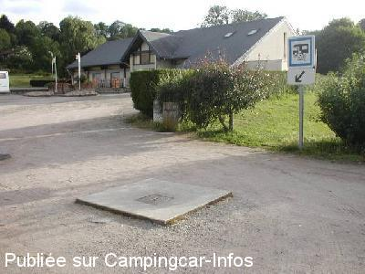

ASN = Aire de services avec stationnement nuit possible de :
MANZAT
(N° 633)
Accès/adresse :
Allée des Platanes
Place du 14 Juillet
63410 MANZAT
Place du 14 Juillet
63410 MANZAT
Latitude : (Nord) 45.96185° Décimaux ou 45° 57′ 42′′
Longitude : (Est) 2.93884° Décimaux ou 2° 56′ 19′′
Tarif : Gratuit
Type de borne : Autre
Services :


Autres informations :
20 emplacements
Tel mairie +33(0)473 866 023

Le 22/07/2011 par guigui68
de
xplorer10
le 19/03/2016 :
certes c est une grande place pour manœuvrer certes c est au calme MAIS parking pas du tout plat, tout le parking est en devers. ..et en plus en terre avec des trois, cul de verre, capsules de bières partout. IDÉAL pour crever ses pneus ...
certes c est une grande place pour manœuvrer certes c est au calme MAIS parking pas du tout plat, tout le parking est en devers. ..et en plus en terre avec des trois, cul de verre, capsules de bières partout. IDÉAL pour crever ses pneus ...
de
PRACHAZAL
le 10/06/2014 :
Passage dans la nuit du diamnche de Pentecôte 8 Juin 2014, très calme, si salle des fêtes à proximité n'est pas utilisée.
Passage dans la nuit du diamnche de Pentecôte 8 Juin 2014, très calme, si salle des fêtes à proximité n'est pas utilisée.
de
philr
le 02/03/2014 :
§ Passage fin février 2014. Eau fermée l'hiver (hors gel). Sinon grande place pour manœuvrer comme pour stationner à qlqs mètres des commerces.
§ Passage fin février 2014. Eau fermée l'hiver (hors gel). Sinon grande place pour manœuvrer comme pour stationner à qlqs mètres des commerces.
de
Jean-Claude
le 22/08/2011 :
Services et parking gratuits. Manoeuvres aisées. Grand parking plat. Les commerces se trouvent près de l'église.
Services et parking gratuits. Manoeuvres aisées. Grand parking plat. Les commerces se trouvent près de l'église.
de
BLONDEL
le 13/06/2010 :
On peut maintenant vidanger les WC, soulever la plaque placée sur la dalle béton.
On peut maintenant vidanger les WC, soulever la plaque placée sur la dalle béton.
de
christian
le 22/05/2006 :
Stationnement très calme et devant la Gendarmerie. L'aire de service est très pratique et gratuite. Commerces à proximité.
Stationnement très calme et devant la Gendarmerie. L'aire de service est très pratique et gratuite. Commerces à proximité.
de
ARRIOLA Helios
le 28/08/2005 :
Nous avons utilisé les services gratuits et fonctionnels. Dommage ce jour là il y avait la vogue et les manèges, donc nous ne sommes pas restés.
Nous avons utilisé les services gratuits et fonctionnels. Dommage ce jour là il y avait la vogue et les manèges, donc nous ne sommes pas restés.